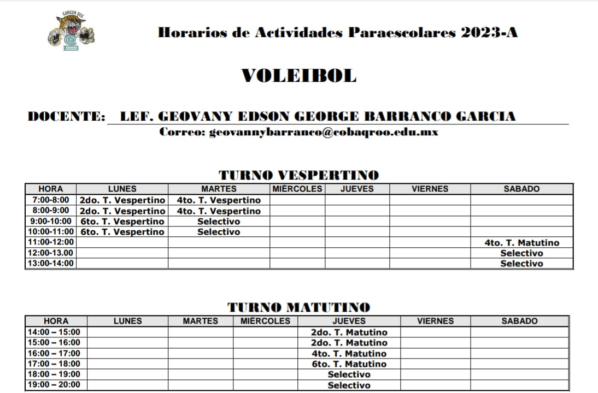
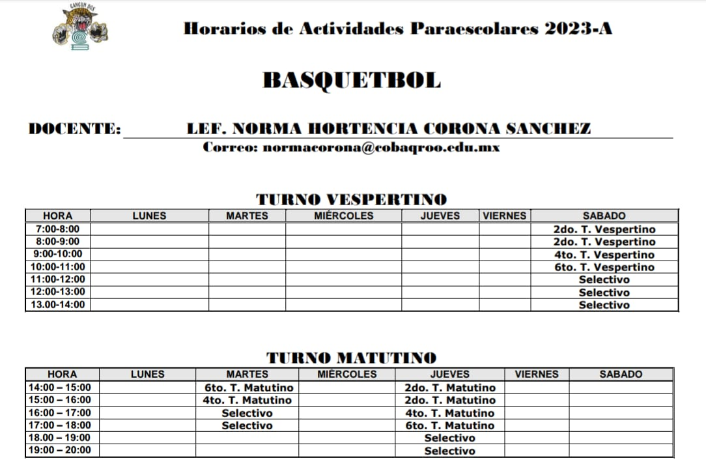
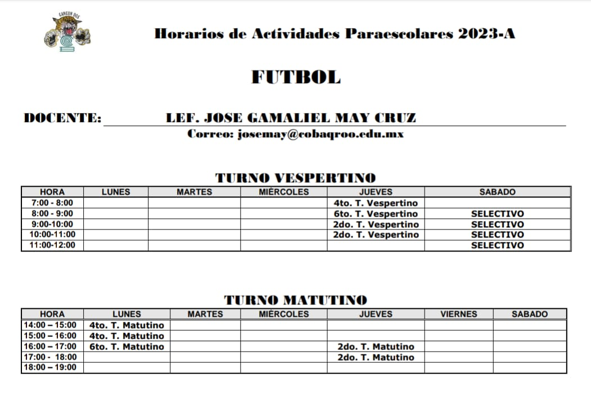
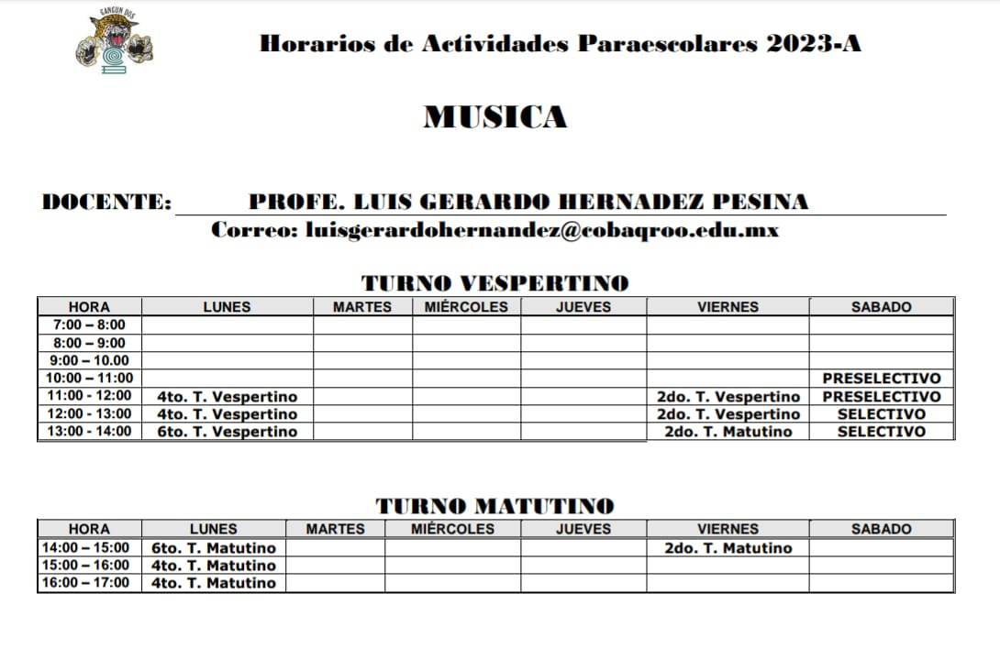
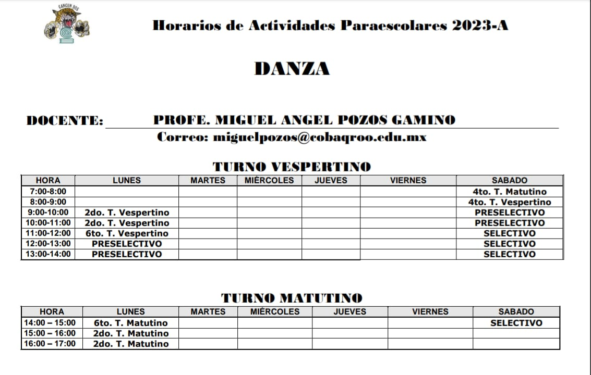
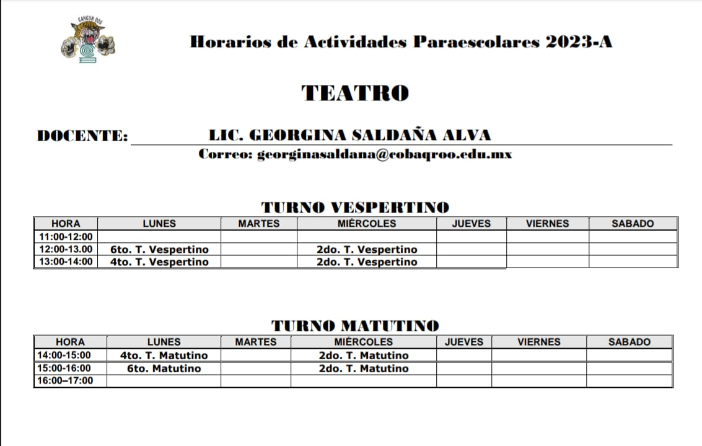

El Voleibol es un deporte de equipo compuesto por 6 integrantes y que enfrenta a dos formaciones una contra otra. Cada equipo se encuentra en un lado de la cancha, dividida por una red sobre la cual debe pasar el balón de una parte a otra.

BASQUETBOL
El básquetbol es un deporte de pelota que se juega en 2 equipos de 5 jugadores cada uno. Cada equipo tiene una canasta, la cual debe defender. El objetivo de los jugadores es llevar la pelota a la canasta del equipo contrario y tirarla dentro para anotar puntos.

BANDA DE GUERRA Y ESCOLTA
Las bandas de guerra están constituidas reglamentariamente por 27 elementos, 12 cajas (tambores), 12 cornetas, 1 comandante, 1 corneta de órdenes (éste es el más antiguo de la banda y con mayor experiencia); opcionalmente también un guionero, quien porta el banderín de la banda de guerra, pero este no es obligatorio
FUTBOL
Juego entre dos equipos de once jugadores cada uno, cuyo objetivo es hacer entrar en la portería contraria un balón que no puede ser tocado con las manos ni con los brazos, salvo por el portero en su área de meta

MUSICA
Arte de combinar los sonidos de la voz humana o de los instrumentos, o de unos y otros a la vez, de suerte que produzcan deleite, conmoviendo la sensibilidad, ya sea alegre, ya tristemente.

DANZA
La danza es un movimiento puesto en forma rítmica y espacial, una sucesión de movimientos que comienza, se desarrolla y finaliza

TEATRO
la rama de las artes escénicas relacionada con la actuación, Representa historias actuadas frente a los espectadores o frente a una cámara usando una combinación de discurso, gestos, escenografía, música, sonido y espectáculo.

PINTURA
es el arte de la representación gráfica utilizando pigmentos mezclados con otras sustancias aglutinantes, orgánicas o sintéticas, En este arte se emplean técnicas de pintura, conocimientos de teoría del color y de composición pictórica, y el dibujo.